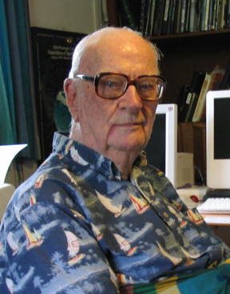

Click en cualquier parte para volver a la pagina principal Arthur C. Clarke Charles Babbage (Teignmouth, Devonshire, Gran Bretaña, 26 de diciembre de 1791-Londres, 18 de octubre de 1871) fue un matemático y científico de la computación británico.1 Diseñó y desarrolló una calculadora mecánica capaz de calcular tablas de funciones numéricas por el método de diferencias. También diseñó, pero nunca construyó, la analítica para ejecutar programas de tabulación o computación; por estos inventos se le considera como una de las primeras personas en concebir la idea de lo que hoy llamaríamos una computadora, por lo que se le considera como "El Padre de la computación". En el Museo de Ciencias de Londres se exhiben partes de sus mecanismos inconclusos. Parte de su cerebro conservado en formol se exhibe en el Royal College of Surgeons of England. Sitio en Londres.  Historia Arthur Charles Clarke (Minehead, Inglaterra; 16 de diciembre de 1917 - Colombo, Sri Lanka; 19 de marzo de 2008), más conocido como Arthur C. Clarke, fue un escritor y científico británico. Autor de obras de divulgación científica y de ciencia ficción, como la novela 2001: Una odisea del espacio, El centinela o Cita con Rama y coguionista de la película 2001: Una odisea del espacio. Biografía Clarke nació en Minehead, Somerset. Ya de pequeño mostró su fascinación por la astronomía cuando, con un telescopio casero, dibujó un mapa de la Luna. Terminados sus estudios secundarios en 1936, se trasladó a Londres. Durante la Segunda Guerra Mundial, sirvió en la Royal Air Force (Real Fuerza Aérea) como especialista en radares, involucrándose en el desarrollo de un sistema de defensa por radar, y ejerciendo como instructor de la naciente especialidad. En 1945, concluida la guerra, publicó su artículo técnico Extra-terrestrial Relays en la revista especializada Wireless World, en el cual sentó las bases de los satélites artificiales en órbita geoestacionaria (llamada, en su honor, órbita Clarke), una de sus grandes contribuciones a la ciencia del siglo XX. Este trabajo le valió numerosos premios, becas y reconocimientos. En ese período estudió matemáticas y física en el prestigioso King's College de Londres, estudios que finalizó con honores. También ejerció varios años como presidente de la Sociedad Interplanetaria Británica (BIS), hecho que demuestra su gran afición por la astronáutica. En 1957 como parte del comité británico acudió a Barcelona para el VIII Congreso Internacional de Astronáutica, momento que coincidió con el lanzamiento del Sputnik I por parte de la Unión de Repúblicas Socialistas Soviéticas. Su fama mundial se consolidó con sus intervenciones en la televisión: en la década de 1960, como comentarista de la CBS de las misiones Apolo; y en la década de 1980, merced a un par de series de televisión que realizó. También son conocidas sus famosas leyes de Clarke, publicadas en su libro de divulgación científica Perfiles del futuro (1962). La más popular (y citada) de ellas es la llamada «Tercera Ley de Clarke»: Toda tecnología lo suficientemente avanzada es indistinguible de la magia. En 1953 Clarke conoció y se casó con Marilyn Mayfield, una divorciada de 22 años con un niño pequeño. Se separaron a los seis meses, aunque el divorcio no se formalizó hasta 1964.1 Clarke nunca volvió a casarse pero fue un amigo muy íntimo de Leslie Ekanayake, quien falleció en 1977. Desde 1956 y hasta su fallecimiento vivió en la isla de Sri Lanka, (antigua Ceilán), en parte por su interés por la fotografía y la exploración submarina, y en parte debido a su fascinación por la cultura india. Se le otorgó el título de caballero de la Orden del Imperio Británico en 1998. También en su honor se puso su nombre a un asteroide, (4923) Clarke, y a una especie de dinosaurio ceratopsiano, Serendipaceratops arthurcclarkei, descubierto en Inverloch (Australia). Estilo Muchos de sus relatos iniciales giran alrededor de una trama científica, a la que gustaba de adornar con un final sorprendente. Resuelve la mayoría de sus obras con un tono generalmente aséptico, sin florituras ni artificios, dejando que sean las ideas encerradas las que mantengan la atención del lector. Este estilo solo se rompe para permitir cierto grado de fino humor elaborado. En cuanto a sus temas, giran en torno a dos ideas fundamentales: optimismo por los beneficios del progreso científico (por lo que destacó en una época de cierto desaliento tras el lanzamiento de las bombas atómicas), y el encuentro con especies y culturas superiores (siempre en un tono muy paternalista). En el cuarteto de las Odiseas llama a la cultura superior «los primogénitos», labradores en el campo de las estrellas, que dejaron su "semilla" en nuestro sistema solar en forma de monolitos, como el que se observa en la cinta de Stanley Kubrick. Como divulgador científico, ha sido siempre comparado por su claridad y amenidad con otro coetáneo, Isaac Asimov.